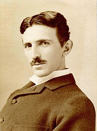

Biografía Héctor
Soy Ing. en sistemas y actualmente estoy estudiando en el centro universitario de ciencias exactas e ingenierias, mi fecha de nacimiento es el 9 de octubre de 1999 y el lugar de nacimiento fue en guadalajara, jalisco, mexico.
desde que tengo memoria me ha gustado la tecnologia y verme envuelto en proyectos del mismo tipo de indole.
Metas
- Terminar la universidad
- Desarrollar un software
- Viajar a las principales ciudades del mundo
- Crear una empresa
Intereses
- Programacion
- Idiomas
- Animales
- Viajes
- Gym
Biografía Nikola Tesla
Nikola Tesla
(en cirílico: Никола Тесла; Smiljan, Imperio austríaco, actual Croacia, 10 de julio de 1856 - Nueva York, 7 de enero de 1943) fue un inventor, ingeniero eléctrico, ingeniero mecánico y físico estadounidense de origen serbocroata.12 Se le conoce sobre todo por sus numerosas invenciones en el campo del electromagnetismo, desarrolladas a finales del siglo XIX y principios del siglo XX. Las patentes de Tesla y su trabajo teórico ayudaron a forjar las bases de los sistemas modernos para el uso de la energía eléctrica por corriente alterna (CA), incluyendo el sistema polifásico de distribución eléctrica y el motor de corriente alterna, que contribuyeron al surgimiento de la Segunda Revolución Industrial.3
Su carácter, su enfrentamiento con Edison y el halo de misterio que rodea a algunos de sus descubrimientos, hicieron que Tesla se convirtiera en un científico muy popular a partir de la década de 1990, con una abundante bibliografía disponible acerca de su vida y de su obra.

Wikipedia
subir